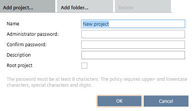

添加项目
您可以将项目添加到Project Manager > Projects.
Projects
如果您有大量项目，请使用文件夹来管理项目。不要将所有项目放在一个简单的列表中。它可能会影响工具的性能。
您无法将项目添加到无效的项目文件夹。点击Add project将打开Project Manager > Settings.
InProject Manager > Settings，在中设置有效的项目路径Local project folder场地。
Settings

您需要以管理员身份登录才能设置或更改其他用户的密码。管理员密码是在创建项目时设置的。
Add a project
- In Project Manager > Settings, you have specified a valid local project folder in the Local project folder field.
- Click Add project.

- Enter a Name.
- Enter an Administrator password and confirm the password.
Note: The ABT Site project password must fulfill the password policy of:
- min. 8 characters
- upper and lower case letters
- digits
- special characters
To access a device the first time with web interface, all 4 rules must be active.
User profiles > Common settings - (Optional) Enter a Description.
- (Optional) Select Root project to add a new ABT Site project on the top level even if a lower level folder is selected.
- A project is added to the project table. The default name is New project_n.